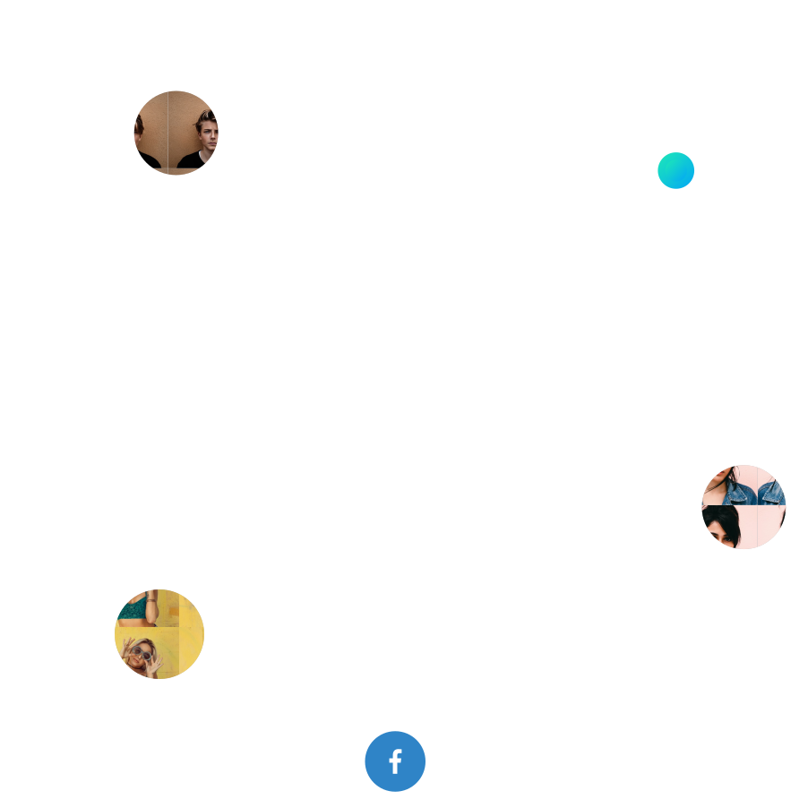
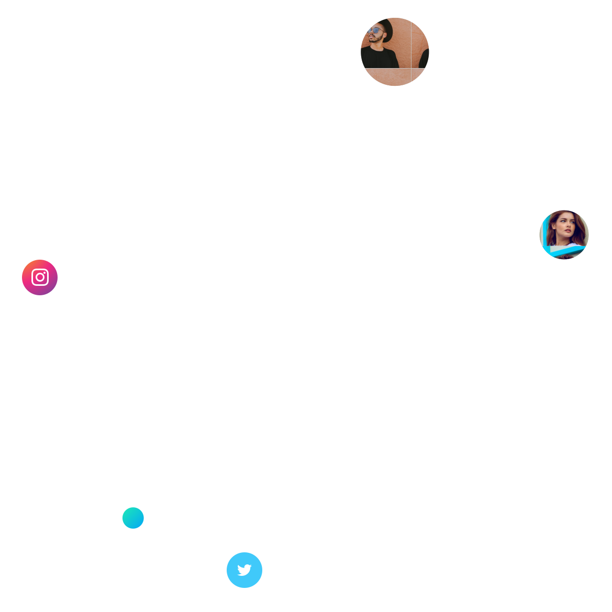

Explore with
your Favorite Creators


Explore with
your Favorite Creators
Supported by

We believe that creativity, innovation and productive work are only possible with the right framework. Our goal is to create precisely these framework conditions and to adapt them to our tenants.

We believe that creativity, innovation and productive work are only possible with the right framework. Our goal is to create precisely these framework conditions and to adapt them to our tenants.

We believe that creativity, innovation and productive work are only possible with the right framework. Our goal is to create precisely these framework conditions and to adapt them to our tenants.

We believe that creativity, innovation and productive work are only possible with the right framework. Our goal is to create precisely these framework conditions and to adapt them to our tenants.

We believe that creativity, innovation and productive work are only possible with the right framework. Our goal is to create precisely these framework conditions and to adapt them to our tenants.
Impressum Angaben gemäß § 5 TMG
Tim Großmann Finkenweg 5 72218 Wildberg
Vertreten durch: Tim Großmann
Kontakt: Telefon: %2B49-15128288055 E-Mail: contact.timgrossmann@gmail.com
Umsatzsteuer-ID: Umsatzsteuer-Identifikationsnummer gemäß §27a Umsatzsteuergesetz: 62937085178
Wirtschafts-ID:
Verantwortlich für den Inhalt nach § 55 Abs. 2 RStV: Tim Großmann Finkenweg 5 72218 Wildberg
Haftungsausschluss:
Haftung für Inhalte
Die Inhalte unserer Seiten wurden mit größter Sorgfalt erstellt. Für die Richtigkeit, Vollständigkeit und Aktualität der Inhalte können wir jedoch keine Gewähr übernehmen. Als Diensteanbieter sind wir gemäß § 7 Abs.1 TMG für eigene Inhalte auf diesen Seiten nach den allgemeinen Gesetzen verantwortlich. Nach §§ 8 bis 10 TMG sind wir als Diensteanbieter jedoch nicht verpflichtet, übermittelte oder gespeicherte fremde Informationen zu überwachen oder nach Umständen zu forschen, die auf eine rechtswidrige Tätigkeit hinweisen. Verpflichtungen zur Entfernung oder Sperrung der Nutzung von Informationen nach den allgemeinen Gesetzen bleiben hiervon unberührt. Eine diesbezügliche Haftung ist jedoch erst ab dem Zeitpunkt der Kenntnis einer konkreten Rechtsverletzung möglich. Bei Bekanntwerden von entsprechenden Rechtsverletzungen werden wir diese Inhalte umgehend entfernen.
Haftung für Links
Unser Angebot enthält Links zu externen Webseiten Dritter, auf deren Inhalte wir keinen Einfluss haben. Deshalb können wir für diese fremden Inhalte auch keine Gewähr übernehmen. Für die Inhalte der verlinkten Seiten ist stets der jeweilige Anbieter oder Betreiber der Seiten verantwortlich. Die verlinkten Seiten wurden zum Zeitpunkt der Verlinkung auf mögliche Rechtsverstöße überprüft. Rechtswidrige Inhalte waren zum Zeitpunkt der Verlinkung nicht erkennbar. Eine permanente inhaltliche Kontrolle der verlinkten Seiten ist jedoch ohne konkrete Anhaltspunkte einer Rechtsverletzung nicht zumutbar. Bei Bekanntwerden von Rechtsverletzungen werden wir derartige Links umgehend entfernen.
Urheberrecht
Die durch die Seitenbetreiber erstellten Inhalte und Werke auf diesen Seiten unterliegen dem deutschen Urheberrecht. Die Vervielfältigung, Bearbeitung, Verbreitung und jede Art der Verwertung außerhalb der Grenzen des Urheberrechtes bedürfen der schriftlichen Zustimmung des jeweiligen Autors bzw. Erstellers. Downloads und Kopien dieser Seite sind nur für den privaten, nicht kommerziellen Gebrauch gestattet. Soweit die Inhalte auf dieser Seite nicht vom Betreiber erstellt wurden, werden die Urheberrechte Dritter beachtet. Insbesondere werden Inhalte Dritter als solche gekennzeichnet. Sollten Sie trotzdem auf eine Urheberrechtsverletzung aufmerksam werden, bitten wir um einen entsprechenden Hinweis. Bei Bekanntwerden von Rechtsverletzungen werden wir derartige Inhalte umgehend entfernen.
Datenschutz
Die Nutzung unserer Webseite ist in der Regel ohne Angabe personenbezogener Daten möglich. Soweit auf unseren Seiten personenbezogene Daten (beispielsweise Name, Anschrift oder eMail-Adressen) erhoben werden, erfolgt dies, soweit möglich, stets auf freiwilliger Basis. Diese Daten werden ohne Ihre ausdrückliche Zustimmung nicht an Dritte weitergegeben. Wir weisen darauf hin, dass die Datenübertragung im Internet (z.B. bei der Kommunikation per E-Mail) Sicherheitslücken aufweisen kann. Ein lückenloser Schutz der Daten vor dem Zugriff durch Dritte ist nicht möglich. Der Nutzung von im Rahmen der Impressumspflicht veröffentlichten Kontaktdaten durch Dritte zur Übersendung von nicht ausdrücklich angeforderter Werbung und Informationsmaterialien wird hiermit ausdrücklich widersprochen. Die Betreiber der Seiten behalten sich ausdrücklich rechtliche Schritte im Falle der unverlangten Zusendung von Werbeinformationen, etwa durch Spam-Mails, vor.
Google Analytics
Diese Website benutzt Google Analytics, einen Webanalysedienst der Google Inc. (''Google''). Google Analytics verwendet sog. ''Cookies'', Textdateien, die auf Ihrem Computer gespeichert werden und die eine Analyse der Benutzung der Website durch Sie ermöglicht. Die durch den Cookie erzeugten Informationen über Ihre Benutzung dieser Website (einschließlich Ihrer IP-Adresse) wird an einen Server von Google in den USA übertragen und dort gespeichert. Google wird diese Informationen benutzen, um Ihre Nutzung der Website auszuwerten, um Reports über die Websiteaktivitäten für die Websitebetreiber zusammenzustellen und um weitere mit der Websitenutzung und der Internetnutzung verbundene Dienstleistungen zu erbringen. Auch wird Google diese Informationen gegebenenfalls an Dritte übertragen, sofern dies gesetzlich vorgeschrieben oder soweit Dritte diese Daten im Auftrag von Google verarbeiten. Google wird in keinem Fall Ihre IP-Adresse mit anderen Daten der Google in Verbindung bringen. Sie können die Installation der Cookies durch eine entsprechende Einstellung Ihrer Browser Software verhindern; wir weisen Sie jedoch darauf hin, dass Sie in diesem Fall gegebenenfalls nicht sämtliche Funktionen dieser Website voll umfänglich nutzen können. Durch die Nutzung dieser Website erklären Sie sich mit der Bearbeitung der über Sie erhobenen Daten durch Google in der zuvor beschriebenen Art und Weise und zu dem zuvor benannten Zweck einverstanden.
Impressum vom Impressum Generator der Kanzlei Hasselbach, Rechtsanwälte für Arbeitsrecht und Familienrecht
Privacy Policy
Personal data (usually referred to just as "data" below) will only be processed by us to the extent necessary and for the purpose of providing a functional and user-friendly website, including its contents, and the services offered there. Per Art. 4 No. 1 of Regulation (EU) 2016/679, i.e. the General Data Protection Regulation (hereinafter referred to as the "GDPR"), "processing" refers to any operation or set of operations such as collection, recording, organization, structuring, storage, adaptation, alteration, retrieval, consultation, use, disclosure by transmission, dissemination, or otherwise making available, alignment, or combination, restriction, erasure, or destruction performed on personal data, whether by automated means or not. The following privacy policy is intended to inform you in particular about the type, scope, purpose, duration, and legal basis for the processing of such data either under our own control or in conjunction with others. We also inform you below about the third-party components we use to optimize our website and improve the user experience which may result in said third parties also processing data they collect and control. Our privacy policy is structured as follows: I. Information about us as controllers of your data II. The rights of users and data subjects III. Information about the data processing I. Information about us as controllers of your data The party responsible for this website (the "controller") for purposes of data protection law is: Tim Grossmann Finkenweg 5 72218 Wildberg Germany Telephone: +4915128288055 Email: contact.timgrossmann@gmail.com II. The rights of users and data subjects With regard to the data processing to be described in more detail below, users and data subjects have the right to confirmation of whether data concerning them is being processed, information about the data being processed, further information about the nature of the data processing, and copies of the data (cf. also Art. 15 GDPR); to correct or complete incorrect or incomplete data (cf. also Art. 16 GDPR); to the immediate deletion of data concerning them (cf. also Art. 17 DSGVO), or, alternatively, if further processing is necessary as stipulated in Art. 17 Para. 3 GDPR, to restrict said processing per Art. 18 GDPR; to receive copies of the data concerning them and/or provided by them and to have the same transmitted to other providers/controllers (cf. also Art. 20 GDPR); to file complaints with the supervisory authority if they believe that data concerning them is being processed by the controller in breach of data protection provisions (see also Art. 77 GDPR). In addition, the controller is obliged to inform all recipients to whom it discloses data of any such corrections, deletions, or restrictions placed on processing the same per Art. 16, 17 Para. 1, 18 GDPR. However, this obligation does not apply if such notification is impossible or involves a disproportionate effort. Nevertheless, users have a right to information about these recipients. Likewise, under Art. 21 GDPR, users and data subjects have the right to object to the controller's future processing of their data pursuant to Art. 6 Para. 1 lit. f) GDPR. In particular, an objection to data processing for the purpose of direct advertising is permissible. III. Information about the data processing Your data processed when using our website will be deleted or blocked as soon as the purpose for its storage ceases to apply, provided the deletion of the same is not in breach of any statutory storage obligations or unless otherwise stipulated below. Server data For technical reasons, the following data sent by your internet browser to us or to our server provider will be collected, especially to ensure a secure and stable website: These server log files record the type and version of your browser, operating system, the website from which you came (referrer URL), the webpages on our site visited, the date and time of your visit, as well as the IP address from which you visited our site. The data thus collected will be temporarily stored, but not in association with any other of your data. The basis for this storage is Art. 6 Para. 1 lit. f) GDPR. Our legitimate interest lies in the improvement, stability, functionality, and security of our website. The data will be deleted within no more than seven days, unless continued storage is required for evidentiary purposes. In which case, all or part of the data will be excluded from deletion until the investigation of the relevant incident is finally resolved. Cookies a) Session cookies We use cookies on our website. Cookies are small text files or other storage technologies stored on your computer by your browser. These cookies process certain specific information about you, such as your browser, location data, or IP address. This processing makes our website more user-friendly, efficient, and secure, allowing us, for example, to display our website in different languages or to offer a shopping cart function. The legal basis for such processing is Art. 6 Para. 1 lit. b) GDPR, insofar as these cookies are used to collect data to initiate or process contractual relationships. If the processing does not serve to initiate or process a contract, our legitimate interest lies in improving the functionality of our website. The legal basis is then Art. 6 Para. 1 lit. f) GDPR. When you close your browser, these session cookies are deleted. b) Third-party cookies If necessary, our website may also use cookies from companies with whom we cooperate for the purpose of advertising, analyzing, or improving the features of our website. Please refer to the following information for details, in particular for the legal basis and purpose of such third-party collection and processing of data collected through cookies. c) Disabling cookies You can refuse the use of cookies by changing the settings on your browser. Likewise, you can use the browser to delete cookies that have already been stored. However, the steps and measures required vary, depending on the browser you use. If you have any questions, please use the help function or consult the documentation for your browser or contact its maker for support. Browser settings cannot prevent so-called flash cookies from being set. Instead, you will need to change the setting of your Flash player. The steps and measures required for this also depend on the Flash player you are using. If you have any questions, please use the help function or consult the documentation for your Flash player or contact its maker for support. If you prevent or restrict the installation of cookies, not all of the functions on our site may be fully usable. Newsletter If you register for our free newsletter, the data requested from you for this purpose, i.e. your email address and, optionally, your name and address, will be sent to us. We also store the IP address of your computer and the date and time of your registration. During the registration process, we will obtain your consent to receive this newsletter and the type of content it will offer, with reference made to this privacy policy. The data collected will be used exclusively to send the newsletter and will not be passed on to third parties. The legal basis for this is Art. 6 Para. 1 lit. a) GDPR. You may revoke your prior consent to receive this newsletter under Art. 7 Para. 3 GDPR with future effect. All you have to do is inform us that you are revoking your consent or click on the unsubscribe link contained in each newsletter. LinkedIn We maintain an online presence on LinkedIn to present our company and our services and to communicate with customers/prospects. LinkedIn is a service of LinkedIn Ireland Unlimited Company, Wilton Plaza, Wilton Place, Dublin 2, Irland, a subsidiary of LinkedIn Corporation, 1000 W. Maude Avenue, Sunnyvale, CA 94085, USA. We would like to point out that this might cause user data to be processed outside the European Union, particularly in the United States. This may increase risks for users that, for example, may make subsequent access to the user data more difficult. We also do not have access to this user data. Access is only available to LinkedIn. The LinkedIn privacy policy can be found here: https://www.linkedin.com/legal/privacy-policy Facebook To advertise our products and services as well as to communicate with interested parties or customers, we have a presence on the Facebook platform. On this social media platform, we are jointly responsible with Facebook Ireland Ltd., 4 Grand Canal Square, Grand Canal Harbor, Dublin 2, Ireland. The data protection officer of Facebook can be reached via this contact form: https://www.facebook.com/help/contact/540977946302970 We have defined the joint responsibility in an agreement regarding the respective obligations within the meaning of the GDPR. This agreement, which sets out the reciprocal obligations, is available at the following link: https://www.facebook.com/legal/terms/page_controller_addendum The legal basis for the processing of the resulting and subsequently disclosed personal data is Art. 6 para. 1 lit. f GDPR. Our legitimate interest lies in the analysis, communication, sales, and promotion of our products and services. The legal basis may also be your consent per Art. 6 para. 1 lit. a GDPR granted to the platform operator. Per Art. 7 para. 3 GDPR, you may revoke this consent with the platform operator at any time with future effect. When accessing our online presence on the Facebook platform, Facebook Ireland Ltd. as the operator of the platform in the EU will process your data (e.g. personal information, IP address, etc.). This data of the user is used for statistical information on the use of our company presence on Facebook. Facebook Ireland Ltd. uses this data for market research and advertising purposes as well as for the creation of user profiles. Based on these profiles, Facebook Ireland Ltd. can provide advertising both within and outside of Facebook based on your interests. If you are logged into Facebook at the time you access our site, Facebook Ireland Ltd. will also link this data to your user account. If you contact us via Facebook, the personal data your provide at that time will be used to process the request. We will delete this data once we have completely responded to your query, unless there are legal obligations to retain the data, such as for subsequent fulfillment of contracts. Facebook Ireland Ltd. might also set cookies when processing your data. If you do not agree to this processing, you have the option of preventing the installation of cookies by making the appropriate settings in your browser. Cookies that have already been saved can be deleted at any time. The instructions to do this depend on the browser and system being used. For Flash cookies, the processing cannot be prevented by the settings in your browser, but instead by making the appropriate settings in your Flash player. If you prevent or restrict the installation of cookies, not all of the functions of Facebook may be fully usable. Details on the processing activities, their suppression, and the deletion of the data processed by Facebook can be found in its privacy policy: https://www.facebook.com/privacy/explanation It cannot be excluded that the processing by Facebook Ireland Ltd. will also take place in the United States by Facebook Inc., 1601 Willow Road, Menlo Park, California 94025. Instagram To advertise our products and services as well as to communicate with interested parties or customers, we have a presence on the Instagram platform. On this social media platform, we are jointly responsible with Facebook Ireland Ltd., 4 Grand Canal Square, Grand Canal Harbour, Dublin 2 Ireland. The data protection officer of Instagram can be reached via this contact form: https://www.facebook.com/help/contact/540977946302970 We have defined the joint responsibility in an agreement regarding the respective obligations within the meaning of the GDPR. This agreement, which sets out the reciprocal obligations, is available at the following link: https://www.facebook.com/legal/terms/page_controller_addendum The legal basis for the processing of the resulting and subsequently disclosed personal data is Art. 6 para. 1 lit. f GDPR. Our legitimate interest lies in the analysis, communication, sales, and promotion of our products and services. The legal basis may also be your consent per Art. 6 para. 1 lit. a GDPR granted to the platform operator. Per Art. 7 para. 3 GDPR, you may revoke this consent with the platform operator at any time with future effect. When accessing our online presence on the Instagram platform, Facebook Ireland Ltd. as the operator of the platform in the EU will process your data (e.g. personal information, IP address, etc.). This data of the user is used for statistical information on the use of our company presence on Instagram. Facebook Ireland Ltd. uses this data for market research and advertising purposes as well as for the creation of user profiles. Based on these profiles, Facebook Ireland Ltd. can provide advertising both within and outside of Instagram based on your interests. If you are logged into Instagram at the time you access our site, Facebook Ireland Ltd. will also link this data to your user account. If you contact us via Instagram, the personal data your provide at that time will be used to process the request. We will delete this data once we have completely responded to your query, unless there are legal obligations to retain the data, such as for subsequent fulfillment of contracts. Facebook Ireland Ltd. might also set cookies when processing your data. If you do not agree to this processing, you have the option of preventing the installation of cookies by making the appropriate settings in your browser. Cookies that have already been saved can be deleted at any time. The instructions to do this depend on the browser and system being used. For Flash cookies, the processing cannot be prevented by the settings in your browser, but instead by making the appropriate settings in your Flash player. If you prevent or restrict the installation of cookies, not all of the functions of Instagram may be fully usable. Details on the processing activities, their suppression, and the deletion of the data processed by Instagram can be found in its privacy policy: https://help.instagram.com/519522125107875 It cannot be excluded that the processing by Facebook Ireland Ltd. will also take place in the United States by Facebook Inc., 1601 Willow Road, Menlo Park, California 94025. Social media links via graphics We also integrate the following social media sites into our website. The integration takes place via a linked graphic of the respective site. The use of these graphics stored on our own servers prevents the automatic connection to the servers of these networks for their display. Only by clicking on the corresponding graphic will you be forwarded to the service of the respective social network. Once you click, that network may record information about you and your visit to our site. It cannot be ruled out that such data will be processed in the United States. Initially, this data includes such things as your IP address, the date and time of your visit, and the page visited. If you are logged into your user account on that network, however, the network operator might assign the information collected about your visit to our site to your personal account. If you interact by clicking Like, Share, etc., this information can be stored your personal user account and possibly posted on the respective network. To prevent this, you need to log out of your social media account before clicking on the graphic. The various social media networks also offer settings that you can configure accordingly. The following social networks are integrated into our site by linked graphics: Facebook Facebook Ireland Limited, 4 Grand Canal Square, Dublin 2, Ireland, a subsidiary of Facebook Inc., 1601 S. California Ave., Palo Alto, CA 94304, USA. Privacy Policy: https://www.facebook.com/policy.php YouTube Google Ireland Limited, Gordon House, Barrow Street, Dublin 4, Irland, a subsidiary of Google LLC, 1600 Amphitheatre Parkway, Mountain View, CA 94043 USA Privacy Policy: https://policies.google.com/privacy LinkedIn LinkedIn Ireland Unlimited Company, Wilton Plaza, Wilton Place, Dublin 2, Irland, a subsidiary of LinkedIn Corporation, 1000 W. Maude Avenue, Sunnyvale, CA 94085 USA. Privacy Policy: https://www.linkedin.com/legal/privacy-policy Instagram Facebook Ireland Limited, 4 Grand Canal Square, Dublin 2, Ireland, a subsidiary of Facebook Inc., 1601 S. California Ave., Palo Alto, CA 94304, USA. Privacy Policy: https://help.instagram.com/519522125107875 Google Analytics We use Google Analytics on our website. This is a web analytics service provided by Google Ireland Limited, Gordon House, Barrow Street, Dublin 4, Irland (hereinafter: Google). The Google Analytics service is used to analyze how our website is used. The legal basis is Art. 6 Para. 1 lit. f) GDPR. Our legitimate interest lies in the analysis, optimization, and economic operation of our site. Usage and user-related information, such as IP address, place, time, or frequency of your visits to our website will be transmitted to a Google server in the United States and stored there. However, we use Google Analytics with the so-called anonymization function, whereby Google truncates the IP address within the EU or the EEA before it is transmitted to the US. The data collected in this way is in turn used by Google to provide us with an evaluation of visits to our website and what visitors do once there. This data can also be used to provide other services related to the use of our website and of the internet in general. Google states that it will not connect your IP address to other data. In addition, Google provides further information with regard to its data protection practices at https://www.google.com/intl/de/policies/privacy/partners, including options you can exercise to prevent such use of your data. In addition, Google offers an opt-out add-on at https://tools.google.com/dlpage/gaoptout?hl=en in addition with further information. This add-on can be installed on the most popular browsers and offers you further control over the data that Google collects when you visit our website. The add-on informs Google Analytics' JavaScript (ga.js) that no information about the website visit should be transmitted to Google Analytics. However, this does not prevent information from being transmitted to us or to other web analytics services we may use as detailed herein. Cookiebot We use Cookiebot to display cookie banners. Cookiebot is a product of Cybot A/S, Havnegade 39, 1058 Copenhagen, Denmark, hereinafter "Cybot."
Cookiebot informs you about the use of cookies on the website and allows you to make a decision about their use.
If you agree to the use of cookies, the following data will be automatically recorded by Cybot:
• your anonymized IP address; • the date and time of your consent; • the user agent of your browser; • the provider's URL; • an anonymous, random, and encrypted key. • your cookie status which serves as proof of consent.
The encrypted key and cookie status are stored by means of a cookie on your device to enable the corresponding cookie status to be restored when you return to our site. This cookie automatically deletes after 12 months.
The legal basis for this processing of data is Art. 6 para. 1 lit. f GDPR. Our legitimate interest is in the user-friendliness of the website and the fulfillment of the statutory requirements of GDPR.
You can prevent cookies from being installed and/or delete this cookie by adjusting the settings on your internet browser. Go to this link to read the Cybot privacy policy:
https://www.cookiebot.com/de/privacy-policy/ MailChimp - Newsletter We offer you the opportunity to register for our free newsletter via our website. We use MailChimp, a service of The Rocket Science Group, LLC, 512 Means Street, Suite 404, Atlanta, GA 30318, USA, hereinafter referred to as "The Rocket Science Group". In addition, the Rocket Science Group offers further information about its data protection practices at http://mailchimp.com/legal/privacy/ If you register for our free newsletter, the data requested from you for this purpose, i.e. your email address and, optionally, your name and address, will be processed by The Rocket Science Group. In addition, your IP address and the date and time of your registration will be saved. During the registration process, your consent to receive this newsletter will be obtained together with a concrete description of the type of content it will offer and reference made to this privacy policy. The newsletter then sent out by The Rocket Science Group will also contain a tracking pixel called a web beacon. This pixel helps us evaluate whether and when you have read our newsletter and whether you have clicked any links contained therein. In addition to further technical data, such as data about your computer hardware and your IP address, the data processed will be stored so that we can optimize our newsletter and respond to the wishes of our readers. The data will therefore increase the quality and attractiveness of our newsletter. The legal basis for sending the newsletter and the analysis is Art. 6 Para. 1 lit. a) GDPR. You may revoke your prior consent to receive this newsletter under Art. 7 Para. 3 GDPR with future effect. All you have to do is inform us that you are revoking your consent or click on the unsubscribe link contained in each newsletter. Model Data Protection Statement for Anwaltskanzlei Weiß & Partner
Datenschutzerklärung Personenbezogene Daten (nachfolgend zumeist nur „Daten“ genannt) werden von uns nur im Rahmen der Erforderlichkeit sowie zum Zwecke der Bereitstellung eines funktionsfähigen und nutzerfreundlichen Internetauftritts, inklusive seiner Inhalte und der dort angebotenen Leistungen, verarbeitet. Gemäß Art. 4 Ziffer 1. der Verordnung (EU) 2016/679, also der Datenschutz-Grundverordnung (nachfolgend nur „DSGVO“ genannt), gilt als „Verarbeitung“ jeder mit oder ohne Hilfe automatisierter Verfahren ausgeführter Vorgang oder jede solche Vorgangsreihe im Zusammenhang mit personenbezogenen Daten, wie das Erheben, das Erfassen, die Organisation, das Ordnen, die Speicherung, die Anpassung oder Veränderung, das Auslesen, das Abfragen, die Verwendung, die Offenlegung durch Übermittlung, Verbreitung oder eine andere Form der Bereitstellung, den Abgleich oder die Verknüpfung, die Einschränkung, das Löschen oder die Vernichtung. Mit der nachfolgenden Datenschutzerklärung informieren wir Sie insbesondere über Art, Umfang, Zweck, Dauer und Rechtsgrundlage der Verarbeitung personenbezogener Daten, soweit wir entweder allein oder gemeinsam mit anderen über die Zwecke und Mittel der Verarbeitung entscheiden. Zudem informieren wir Sie nachfolgend über die von uns zu Optimierungszwecken sowie zur Steigerung der Nutzungsqualität eingesetzten Fremdkomponenten, soweit hierdurch Dritte Daten in wiederum eigener Verantwortung verarbeiten. Unsere Datenschutzerklärung ist wie folgt gegliedert: I. Informationen über uns als Verantwortliche II. Rechte der Nutzer und Betroffenen III. Informationen zur Datenverarbeitung I. Informationen über uns als Verantwortliche Verantwortlicher Anbieter dieses Internetauftritts im datenschutzrechtlichen Sinne ist: Tim Grossmann Finkenweg 5 72218 Wildberg Germany Telephone: +4915128288055 Email: contact.timgrossmann@gmail.com II. Rechte der Nutzer und Betroffenen Mit Blick auf die nachfolgend noch näher beschriebene Datenverarbeitung haben die Nutzer und Betroffenen das Recht auf Bestätigung, ob sie betreffende Daten verarbeitet werden, auf Auskunft über die verarbeiteten Daten, auf weitere Informationen über die Datenverarbeitung sowie auf Kopien der Daten (vgl. auch Art. 15 DSGVO); auf Berichtigung oder Vervollständigung unrichtiger bzw. unvollständiger Daten (vgl. auch Art. 16 DSGVO); auf unverzügliche Löschung der sie betreffenden Daten (vgl. auch Art. 17 DSGVO), oder, alternativ, soweit eine weitere Verarbeitung gemäß Art. 17 Abs. 3 DSGVO erforderlich ist, auf Einschränkung der Verarbeitung nach Maßgabe von Art. 18 DSGVO; auf Erhalt der sie betreffenden und von ihnen bereitgestellten Daten und auf Übermittlung dieser Daten an andere Anbieter/Verantwortliche (vgl. auch Art. 20 DSGVO); auf Beschwerde gegenüber der Aufsichtsbehörde, sofern sie der Ansicht sind, dass die sie betreffenden Daten durch den Anbieter unter Verstoß gegen datenschutzrechtliche Bestimmungen verarbeitet werden (vgl. auch Art. 77 DSGVO). Darüber hinaus ist der Anbieter dazu verpflichtet, alle Empfänger, denen gegenüber Daten durch den Anbieter offengelegt worden sind, über jedwede Berichtigung oder Löschung von Daten oder die Einschränkung der Verarbeitung, die aufgrund der Artikel 16, 17 Abs. 1, 18 DSGVO erfolgt, zu unterrichten. Diese Verpflichtung besteht jedoch nicht, soweit diese Mitteilung unmöglich oder mit einem unverhältnismäßigen Aufwand verbunden ist. Unbeschadet dessen hat der Nutzer ein Recht auf Auskunft über diese Empfänger. Ebenfalls haben die Nutzer und Betroffenen nach Art. 21 DSGVO das Recht auf Widerspruch gegen die künftige Verarbeitung der sie betreffenden Daten, sofern die Daten durch den Anbieter nach Maßgabe von Art. 6 Abs. 1 lit. f) DSGVO verarbeitet werden. Insbesondere ist ein Widerspruch gegen die Datenverarbeitung zum Zwecke der Direktwerbung statthaft. III. Informationen zur Datenverarbeitung Ihre bei Nutzung unseres Internetauftritts verarbeiteten Daten werden gelöscht oder gesperrt, sobald der Zweck der Speicherung entfällt, der Löschung der Daten keine gesetzlichen Aufbewahrungspflichten entgegenstehen und nachfolgend keine anderslautenden Angaben zu einzelnen Verarbeitungsverfahren gemacht werden. Serverdaten Aus technischen Gründen, insbesondere zur Gewährleistung eines sicheren und stabilen Internetauftritts, werden Daten durch Ihren Internet-Browser an uns bzw. an unseren Webspace-Provider übermittelt. Mit diesen sog. Server-Logfiles werden u.a. Typ und Version Ihres Internetbrowsers, das Betriebssystem, die Website, von der aus Sie auf unseren Internetauftritt gewechselt haben (Referrer URL), die Website(s) unseres Internetauftritts, die Sie besuchen, Datum und Uhrzeit des jeweiligen Zugriffs sowie die IP-Adresse des Internetanschlusses, von dem aus die Nutzung unseres Internetauftritts erfolgt, erhoben. Diese so erhobenen Daten werden vorrübergehend gespeichert, dies jedoch nicht gemeinsam mit anderen Daten von Ihnen. Diese Speicherung erfolgt auf der Rechtsgrundlage von Art. 6 Abs. 1 lit. f) DSGVO. Unser berechtigtes Interesse liegt in der Verbesserung, Stabilität, Funktionalität und Sicherheit unseres Internetauftritts. Die Daten werden spätestens nach sieben Tage wieder gelöscht, soweit keine weitere Aufbewahrung zu Beweiszwecken erforderlich ist. Andernfalls sind die Daten bis zur endgültigen Klärung eines Vorfalls ganz oder teilweise von der Löschung ausgenommen. Cookies a) Sitzungs-Cookies/Session-Cookies Wir verwenden mit unserem Internetauftritt sog. Cookies. Cookies sind kleine Textdateien oder andere Speichertechnologien, die durch den von Ihnen eingesetzten Internet-Browser auf Ihrem Endgerät ablegt und gespeichert werden. Durch diese Cookies werden im individuellen Umfang bestimmte Informationen von Ihnen, wie beispielsweise Ihre Browser- oder Standortdaten oder Ihre IP-Adresse, verarbeitet. Durch diese Verarbeitung wird unser Internetauftritt benutzerfreundlicher, effektiver und sicherer, da die Verarbeitung bspw. die Wiedergabe unseres Internetauftritts in unterschiedlichen Sprachen oder das Angebot einer Warenkorbfunktion ermöglicht. Rechtsgrundlage dieser Verarbeitung ist Art. 6 Abs. 1 lit b.) DSGVO, sofern diese Cookies Daten zur Vertragsanbahnung oder Vertragsabwicklung verarbeitet werden. Falls die Verarbeitung nicht der Vertragsanbahnung oder Vertragsabwicklung dient, liegt unser berechtigtes Interesse in der Verbesserung der Funktionalität unseres Internetauftritts. Rechtsgrundlage ist in dann Art. 6 Abs. 1 lit. f) DSGVO. Mit Schließen Ihres Internet-Browsers werden diese Session-Cookies gelöscht. b) Drittanbieter-Cookies Gegebenenfalls werden mit unserem Internetauftritt auch Cookies von Partnerunternehmen, mit denen wir zum Zwecke der Werbung, der Analyse oder der Funktionalitäten unseres Internetauftritts zusammenarbeiten, verwendet. Die Einzelheiten hierzu, insbesondere zu den Zwecken und den Rechtsgrundlagen der Verarbeitung solcher Drittanbieter-Cookies, entnehmen Sie bitte den nachfolgenden Informationen. c) Beseitigungsmöglichkeit Sie können die Installation der Cookies durch eine Einstellung Ihres Internet-Browsers verhindern oder einschränken. Ebenfalls können Sie bereits gespeicherte Cookies jederzeit löschen. Die hierfür erforderlichen Schritte und Maßnahmen hängen jedoch von Ihrem konkret genutzten Internet-Browser ab. Bei Fragen benutzen Sie daher bitte die Hilfefunktion oder Dokumentation Ihres Internet-Browsers oder wenden sich an dessen Hersteller bzw. Support. Bei sog. Flash-Cookies kann die Verarbeitung allerdings nicht über die Einstellungen des Browsers unterbunden werden. Stattdessen müssen Sie insoweit die Einstellung Ihres Flash-Players ändern. Auch die hierfür erforderlichen Schritte und Maßnahmen hängen von Ihrem konkret genutzten Flash-Player ab. Bei Fragen benutzen Sie daher bitte ebenso die Hilfefunktion oder Dokumentation Ihres Flash-Players oder wenden sich an den Hersteller bzw. Benutzer-Support. Sollten Sie die Installation der Cookies verhindern oder einschränken, kann dies allerdings dazu führen, dass nicht sämtliche Funktionen unseres Internetauftritts vollumfänglich nutzbar sind. Newsletter Falls Sie sich für unseren kostenlosen Newsletter anmelden, werden die von Ihnen hierzu abgefragten Daten, also Ihre E-Mail-Adresse sowie - optional - Ihr Name und Ihre Anschrift, an uns übermittelt. Gleichzeitig speichern wir die IP-Adresse des Internetanschlusses von dem aus Sie auf unseren Internetauftritt zugreifen sowie Datum und Uhrzeit Ihrer Anmeldung. Im Rahmen des weiteren Anmeldevorgangs werden wir Ihre Einwilligung in die Übersendung des Newsletters einholen, den Inhalt konkret beschreiben und auf diese Datenschutzerklärung verwiesen. Die dabei erhobenen Daten verwenden wir ausschließlich für den Newsletter-Versand – sie werden deshalb insbesondere auch nicht an Dritte weitergegeben. Rechtsgrundlage hierbei ist Art. 6 Abs. 1 lit. a) DSGVO. Die Einwilligung in den Newsletter-Versand können Sie gemäß Art. 7 Abs. 3 DSGVO jederzeit mit Wirkung für die Zukunft widerrufen. Hierzu müssen Sie uns lediglich über Ihren Widerruf in Kenntnis setzen oder den in jedem Newsletter enthaltenen Abmeldelink betätigen. LinkedIn Wir unterhalten bei LinkedIn eine Onlinepräsenz um unser Unternehmen sowie unsere Leistungen zu präsentieren und mit Kunden/Interessenten zu kommunizieren. LinkedIn ist ein Service der LinkedIn Ireland Unlimited Company, Wilton Plaza, Wilton Place, Dublin 2, Irland, ein Tochterunternehmen der LinkedIn Corporation, 1000 W. Maude Avenue, Sunnyvale, CA 94085, USA. Insofern weisen wir darauf hin, dass die Möglichkeit besteht, dass Daten der Nutzer außerhalb der Europäischen Union, insbesondere in den USA, verarbeitet werden. Hierdurch können gesteigerte Risiken für die Nutzer insofern bestehen, als dass z.B. der spätere Zugriff auf die Nutzerdaten erschwert werden kann. Auch haben wir keinen Zugriff auf diese Nutzerdaten. Die Zugriffsmöglichkeit liegt ausschließlich bei LinkedIn. Die Datenschutzhinweise von LinkedIn finden Sie unter https://www.linkedin.com/legal/privacy-policy Facebook Zur Bewerbung unserer Produkte und Leistungen sowie zur Kommunikation mit Interessenten oder Kunden betreiben wir eine Firmenpräsenz auf der Plattform Facebook. Auf dieser Social-Media-Plattform sind wir gemeinsam mit der Facebook Ireland Ltd., 4 Grand Canal Square, Grand Canal Harbour, Dublin 2 Ireland, verantwortlich. Der Datenschutzbeauftragte von Facebook kann über ein Kontaktformular erreicht werden: https://www.facebook.com/help/contact/540977946302970 Die gemeinsame Verantwortlichkeit haben wir in einer Vereinbarung bezüglich der jeweiligen Verpflichtungen im Sinne der DSGVO geregelt. Diese Vereinbarung, aus der sich die gegenseitigen Verpflichtungen ergeben, ist unter dem folgenden Link abrufbar: https://www.facebook.com/legal/terms/page_controller_addendum Rechtsgrundlage für die dadurch erfolgende und nachfolgend wiedergegebene Verarbeitung von personenbezogenen Daten ist Art. 6 Abs. 1 lit. f DSGVO. Unser berechtigtes Interesse besteht an der Analyse, der Kommunikation sowie dem Absatz und der Bewerbung unserer Produkte und Leistungen. Rechtsgrundlage kann auch eine Einwilligung des Nutzers gemäß Art. 6 Abs. 1 lit. a DSGVO gegenüber dem Plattformbetreiber sein. Die Einwilligung hierzu kann der Nutzer nach Art. 7 Abs. 3 DSGVO jederzeit durch eine Mitteilung an den Plattformbetreiber für die Zukunft widerrufen. Bei dem Aufruf unseres Onlineauftritts auf der Plattform Facebook werden von der Facebook Ireland Ltd. als Betreiberin der Plattform in der EU Daten des Nutzers (z.B. persönliche Informationen, IP-Adresse etc.) verarbeitet. Diese Daten des Nutzers dienen zu statistischen Informationen über die Inanspruchnahme unserer Firmenpräsenz auf Facebook. Die Facebook Ireland Ltd. nutzt diese Daten zu Marktforschungs- und Werbezwecken sowie zur Erstellung von Profilen der Nutzer. Anhand dieser Profile ist es der Facebook Ireland Ltd. beispielsweise möglich, die Nutzer innerhalb und außerhalb von Facebook interessenbezogen zu bewerben. Ist der Nutzer zum Zeitpunkt des Aufrufes in seinem Account auf Facebook eingeloggt, kann die Facebook Ireland Ltd. zudem die Daten mit dem jeweiligen Nutzerkonto verknüpfen. Im Falle einer Kontaktaufnahme des Nutzers über Facebook werden die bei dieser Gelegenheit eingegebenen personenbezogenen Daten des Nutzers zur Bearbeitung der Anfrage genutzt. Die Daten des Nutzers werden bei uns gelöscht, sofern die Anfrage des Nutzers abschließend beantwortet wurde und keine gesetzlichen Aufbewahrungspflichten, wie z.B. bei einer anschließenden Vertragsabwicklung, entgegenstehen. Zur Verarbeitung der Daten werden von der Facebook Ireland Ltd. ggf. auch Cookies gesetzt. Sollte der Nutzer mit dieser Verarbeitung nicht einverstanden sein, so besteht die Möglichkeit, die Installation der Cookies durch eine entsprechende Einstellung des Browsers zu verhindern. Bereits gespeicherte Cookies können ebenfalls jederzeit gelöscht werden. Die Einstellungen hierzu sind vom jeweiligen Browser abhängig. Bei Flash-Cookies lässt sich die Verarbeitung nicht über die Einstellungen des Browsers unterbinden, sondern durch die entsprechende Einstellung des Flash-Players. Sollte der Nutzer die Installation der Cookies verhindern oder einschränken, kann dies dazu führen, dass nicht sämtliche Funktionen von Facebook vollumfänglich nutzbar sind. Näheres zu den Verarbeitungstätigkeiten, deren Unterbindung und zur Löschung der von Facebook verarbeiteten Daten finden sich in der Datenrichtlinie von Facebook: https://www.facebook.com/privacy/explanation Es ist nicht ausgeschlossen, dass die Verarbeitung durch die Facebook Ireland Ltd. auch über die Facebook Inc., 1601 Willow Road, Menlo Park, California 94025 in den USA erfolgt. Instagram Zur Bewerbung unserer Produkte und Leistungen sowie zur Kommunikation mit Interessenten oder Kunden betreiben wir eine Firmenpräsenz auf der Plattform Instagram. Auf dieser Social-Media-Plattform sind wir gemeinsam mit der Facebook Ireland Ltd., 4 Grand Canal Square, Grand Canal Harbour, Dublin 2 Ireland, verantwortlich. Der Datenschutzbeauftragte von Instagram kann über ein Kontaktformular erreicht werden: https://www.facebook.com/help/contact/540977946302970 Die gemeinsame Verantwortlichkeit haben wir in einer Vereinbarung bezüglich der jeweiligen Verpflichtungen im Sinne der DSGVO geregelt. Diese Vereinbarung, aus der sich die gegenseitigen Verpflichtungen ergeben, ist unter dem folgenden Link abrufbar: https://www.facebook.com/legal/terms/page_controller_addendum Rechtsgrundlage für die dadurch erfolgende und nachfolgend wiedergegebene Verarbeitung von personenbezogenen Daten ist Art. 6 Abs. 1 lit. f DSGVO. Unser berechtigtes Interesse besteht an der Analyse, der Kommunikation sowie dem Absatz und der Bewerbung unserer Produkte und Leistungen. Rechtsgrundlage kann auch eine Einwilligung des Nutzers gemäß Art. 6 Abs. 1 lit. a DSGVO gegenüber dem Plattformbetreiber sein. Die Einwilligung hierzu kann der Nutzer nach Art. 7 Abs. 3 DSGVO jederzeit durch eine Mitteilung an den Plattformbetreiber für die Zukunft widerrufen. Bei dem Aufruf unseres Onlineauftritts auf der Plattform Instagram werden von der Facebook Ireland Ltd. als Betreiberin der Plattform in der EU Daten des Nutzers (z.B. persönliche Informationen, IP-Adresse etc.) verarbeitet. Diese Daten des Nutzers dienen zu statistischen Informationen über die Inanspruchnahme unserer Firmenpräsenz auf Instagram. Die Facebook Ireland Ltd. nutzt diese Daten zu Marktforschungs- und Werbezwecken sowie zur Erstellung von Profilen der Nutzer. Anhand dieser Profile ist es der Facebook Ireland Ltd. beispielsweise möglich, die Nutzer innerhalb und außerhalb von Instagram interessenbezogen zu bewerben. Ist der Nutzer zum Zeitpunkt des Aufrufes in seinem Account auf Instagram eingeloggt, kann die Facebook Ireland Ltd. zudem die Daten mit dem jeweiligen Nutzerkonto verknüpfen. Im Falle einer Kontaktaufnahme des Nutzers über Instagram werden die bei dieser Gelegenheit eingegebenen personenbezogenen Daten des Nutzers zur Bearbeitung der Anfrage genutzt. Die Daten des Nutzers werden bei uns gelöscht, sofern die Anfrage des Nutzers abschließend beantwortet wurde und keine gesetzlichen Aufbewahrungspflichten, wie z.B. bei einer anschließenden Vertragsabwicklung, entgegenstehen. Zur Verarbeitung der Daten werden von der Facebook Ireland Ltd. ggf. auch Cookies gesetzt. Sollte der Nutzer mit dieser Verarbeitung nicht einverstanden sein, so besteht die Möglichkeit, die Installation der Cookies durch eine entsprechende Einstellung des Browsers zu verhindern. Bereits gespeicherte Cookies können ebenfalls jederzeit gelöscht werden. Die Einstellungen hierzu sind vom jeweiligen Browser abhängig. Bei Flash-Cookies lässt sich die Verarbeitung nicht über die Einstellungen des Browsers unterbinden, sondern durch die entsprechende Einstellung des Flash-Players. Sollte der Nutzer die Installation der Cookies verhindern oder einschränken, kann dies dazu führen, dass nicht sämtliche Funktionen von Facebook vollumfänglich nutzbar sind. Näheres zu den Verarbeitungstätigkeiten, deren Unterbindung und zur Löschung der von Instagram verarbeiteten Daten finden sich in der Datenrichtlinie von Instagram: https://help.instagram.com/519522125107875 Es ist nicht ausgeschlossen, dass die Verarbeitung durch die Facebook Ireland Ltd. auch über die Facebook Inc., 1601 Willow Road, Menlo Park, California 94025 in den USA erfolgt. Verlinkung Social-Media über Grafik oder Textlink Wir bewerben auf unserer Webseite auch Präsenzen auf den nachstehend aufgeführten sozialen Netzwerken. Die Einbindung erfolgt dabei über eine verlinkte Grafik des jeweiligen Netzwerks. Durch den Einsatz dieser verlinkten Grafik wird verhindert, dass es bei dem Aufruf einer Website, die über eine Social-Media-Bewerbung verfügt, automatisch zu einem Verbindungsaufbau zum jeweiligen Server des sozialen Netzwerks kommt, um eine Grafik des jeweiligen Netzwerkes selbst darzustellen. Erst durch einen Klick auf die entsprechende Grafik wird der Nutzer zu dem Dienst des jeweiligen sozialen Netzwerks weitergeleitet. Nach der Weiterleitung des Nutzers werden durch das jeweilige Netzwerk Informationen über den Nutzer erfasst. Es kann hierbei nicht ausgeschlossen werden, dass eine Verarbeitung der so erhobenen Daten in den USA stattfindet. Dies sind zunächst Daten wie IP-Adresse, Datum, Uhrzeit und besuchte Seite. Ist der Nutzer währenddessen in seinem Benutzerkonto des jeweiligen Netzwerks eingeloggt, kann der Netzwerk-Betreiber ggf. die gesammelten Informationen des konkreten Besuchs des Nutzers dem persönlichen Account des Nutzers zuordnen. Interagiert der Nutzer über einen „Teilen“-Button des jeweiligen Netzwerks, können diese Informationen in dem persönlichen Benutzerkonto des Nutzers gespeichert und ggf. veröffentlicht werden. Will der Nutzer verhindern, dass die gesammelten Informationen unmittelbar seinem Benutzerkonto zugeordnet werden, muss er sich vor dem Anklicken der Grafik ausloggen. Zudem besteht die Möglichkeit, das jeweilige Benutzerkonto entsprechend zu konfigurieren. Folgende soziale Netzwerke werden in unsere Seite durch Verlinkung eingebunden: facebook Facebook Ireland Limited, 4 Grand Canal Square, Dublin 2, Ireland, ein Tochterunternehmen der Facebook Inc., 1601 S. California Ave., Palo Alto, CA 94304, USA. Datenschutzerklärung: https://www.facebook.com/policy.php YouTube Google Ireland Limited, Gordon House, Barrow Street, Dublin 4, Irland, ein Tochterunternehmen der Google LLC, 1600 Amphitheatre Parkway, Mountain View, CA 94043 USA Datenschutzerklärung: https://policies.google.com/privacy LinkedIn LinkedIn Ireland Unlimited Company, Wilton Plaza, Wilton Place, Dublin 2, Irland, ein Tochterunternehmen der LinkedIn Corporation, 1000 W. Maude Avenue, Sunnyvale, CA 94085 USA. Datenschutzerklärung: https://www.linkedin.com/legal/privacy-policy Instagram Facebook Ireland Limited, 4 Grand Canal Square, Dublin 2, Ireland, ein Tochterunternehmen der Facebook Inc., 1601 S. California Ave., Palo Alto, CA 94304, USA. Datenschutzerklärung: https://help.instagram.com/519522125107875 Google Analytics In unserem Internetauftritt setzen wir Google Analytics ein. Hierbei handelt es sich um einen Webanalysedienst der Google Ireland Limited, Gordon House, Barrow Street, Dublin 4, Irland, nachfolgend nur „Google“ genannt. Der Dienst Google Analytics dient zur Analyse des Nutzungsverhaltens unseres Internetauftritts. Rechtsgrundlage ist Art. 6 Abs. 1 lit. f) DSGVO. Unser berechtigtes Interesse liegt in der Analyse, Optimierung und dem wirtschaftlichen Betrieb unseres Internetauftritts. Nutzungs- und nutzerbezogene Informationen, wie bspw. IP-Adresse, Ort, Zeit oder Häufigkeit des Besuchs unseres Internetauftritts, werden dabei an einen Server von Google in den USA übertragen und dort gespeichert. Allerdings nutzen wir Google Analytics mit der sog. Anonymisierungsfunktion. Durch diese Funktion kürzt Google die IP-Adresse schon innerhalb der EU bzw. des EWR. Die so erhobenen Daten werden wiederum von Google genutzt, um uns eine Auswertung über den Besuch unseres Internetauftritts sowie über die dortigen Nutzungsaktivitäten zur Verfügung zu stellen. Auch können diese Daten genutzt werden, um weitere Dienstleistungen zu erbringen, die mit der Nutzung unseres Internetauftritts und der Nutzung des Internets zusammenhängen. Google gibt an, Ihre IP-Adresse nicht mit anderen Daten zu verbinden. Zudem hält Google unter https://www.google.com/intl/de/policies/privacy/partners weitere datenschutzrechtliche Informationen für Sie bereit, so bspw. auch zu den Möglichkeiten, die Datennutzung zu unterbinden. Zudem bietet Google unter https://tools.google.com/dlpage/gaoptout?hl=de ein sog. Deaktivierungs-Add-on nebst weiteren Informationen hierzu an. Dieses Add-on lässt sich mit den gängigen Internet-Browsern installieren und bietet Ihnen weitergehende Kontrollmöglichkeit über die Daten, die Google bei Aufruf unseres Internetauftritts erfasst. Dabei teilt das Add-on dem JavaScript (ga.js) von Google Analytics mit, dass Informationen zum Besuch unseres Internetauftritts nicht an Google Analytics übermittelt werden sollen. Dies verhindert aber nicht, dass Informationen an uns oder an andere Webanalysedienste übermittelt werden. Ob und welche weiteren Webanalysedienste von uns eingesetzt werden, erfahren Sie natürlich ebenfalls in dieser Datenschutzerklärung. Cookiebot Als „Cookie-Banner“ setzen wir „Cookiebot“ ein. „Cookiebot“ ist ein Produkt der Cybot A/S, Havnegade 39, 1058 Kopenhagen, Dänemark, nachfolgend „Cybot“.
Durch die Funktion „Cookiebot“ informieren wir den Nutzer über die Verwendung von Cookies auf der Website und ermöglichen es dem Nutzer eine Entscheidung über deren Nutzung zu treffen.
Gibt der Nutzer seine Zustimmung zu der Verwendung der Cookies, werden die folgenden Daten automatisch bei Cybot protokolliert:
• Die anonymisierte IP-Nummer des Nutzers; • Datum und Uhrzeit der Zustimmung; • Benutzeragent des Browsers des Endnutzers; • Die URL des Anbieters; • Ein anonymer, zufälliger und verschlüsselter Key. • Die zugelassenen Cookies des Nutzers (Cookie-Status), der als Nachweis der Zustimmung dient.
Der verschlüsselte Key und der Cookie-Status werden anhand eines Cookies auf dem Endgerät des Nutzers gespeichert, um bei zukünftigen Seitenaufrufen den entsprechenden Cookie-Status herzustellen. Dieses Cookie löscht sich automatisch nach 12 Monaten.
Rechtsgrundlage ist hierbei Art. 6 Abs. 1 lit. f DSGVO. Unser berechtigtes Interesse besteht in der Anwenderfreundlichkeit der Website sowie in der Erfüllung der gesetzlichen Vorgaben der DSGVO.
Die Installation des Cookies sowie dessen Speicherung, und damit seine Cookie-Zustimmung, kann der Nutzer durch Einstellungen seines Browsers jederzeit verhindern bzw. beenden. Weitergehende Informationen zum Thema Datenschutz bietet Cybot unter den nachfolgenden Links an:
https://www.cookiebot.com/de/privacy-policy/ MailChimp - Newsletter Wir bieten Ihnen die Möglichkeit an, sich bei uns über unseren Internetauftritt für unsere kostenlosen Newsletter anmelden zu können. Zum Newsletterversand setzen wir MailChimp, einen Dienst der The Rocket Science Group, LLC, 512 Means Street, Suite 404, Atlanta, GA 30318, USA, nachfolgend nur „The Rocket Science Group“ genannt, ein. Zudem bietet The Rocket Science Group unter http://mailchimp.com/legal/privacy/ weitergehende Datenschutzinformationen an. Falls Sie sich zu unserem Newsletter-Versand anmelden, werden die während des Anmeldevorgangs abgefragten Daten, wie Ihre E-Mail-Adresse sowie, optional, Ihr Name nebst Anschrift, durch The Rocket Science Group verarbeitet. Zudem werden Ihre IP-Adresse sowie das Datum Ihrer Anmeldung nebst Uhrzeit gespeichert. Im Rahmen des weiteren Anmeldevorgangs wird Ihre Einwilligung in die Übersendung des Newsletters eingeholt, der Inhalt konkret beschreiben und auf diese Datenschutzerklärung verwiesen. Der anschließend über The Rocket Science Group versandte Newsletter enthält zudem einen sog. Zählpixel, auch Web Beacon genannt“. Mit Hilfe dieses Zählpixels können wir auswerten, ob und wann Sie unseren Newsletter gelesen haben und ob Sie den in dem Newsletter etwaig enthaltenen weiterführenden Links gefolgt sind. Neben weiteren technischen Daten, wie bspw. die Daten Ihres EDV-Systems und Ihre IP-Adresse, werden die dabei verarbeiteten Daten gespeichert, damit wir unser Newsletter-Angebot optimieren und auf die Wünsche der Leser eingehen können. Die Daten werden also zur Steigerung der Qualität und Attraktivität unseres Newsletter-Angebots zu steigern. Rechtsgrundlage für den Versand des Newsletters und die Analyse ist Art. 6 Abs. 1 lit. a.) DSGVO. Die Einwilligung in den Newsletter-Versand können Sie gemäß Art. 7 Abs. 3 DSGVO jederzeit mit Wirkung für die Zukunft widerrufen. Hierzu müssen Sie uns lediglich über Ihren Widerruf in Kenntnis setzen oder den in jedem Newsletter enthaltenen Abmeldelink betätigen. Muster-Datenschutzerklärung der Anwaltskanzlei Weiß & Partner